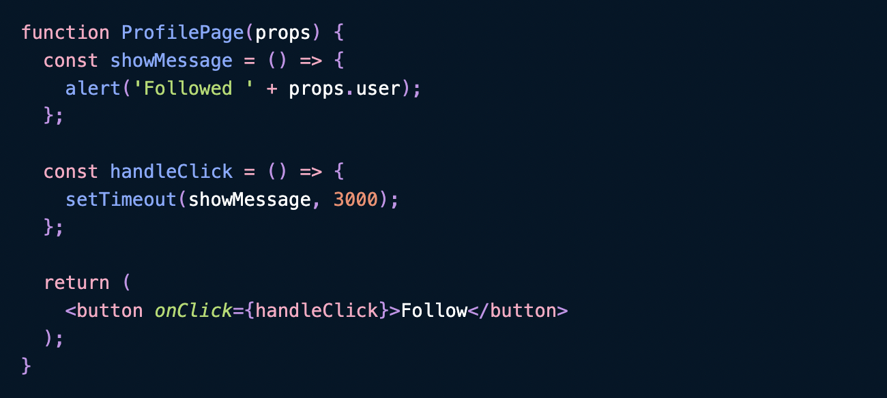
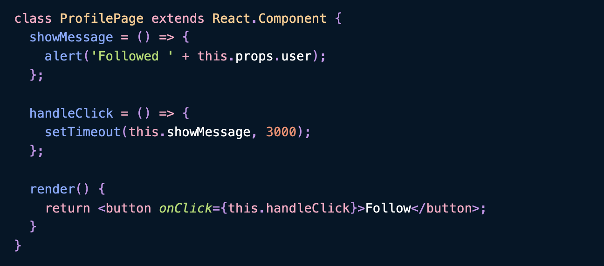
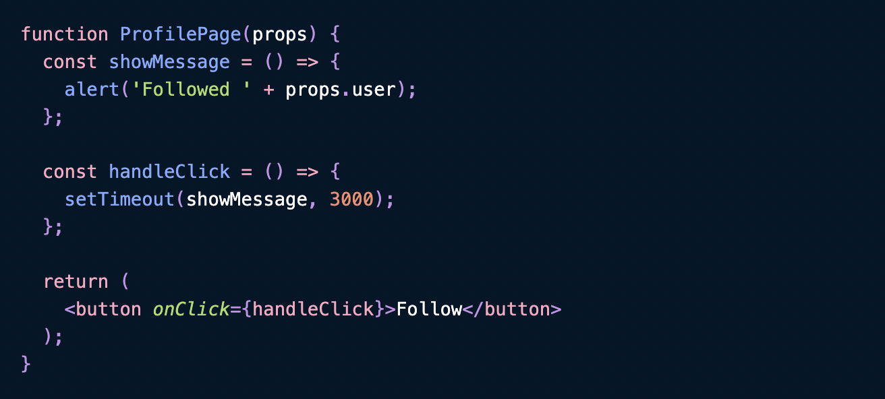

React function component
Deep dive into React Function Components
들어가기 전에
스타트업에서 서비스(이하 프로덕트)을 개발하면서 가장 크게 느낀 점은 제한된 리소스를 최대한 활용해야하는 것이다. 제한된 리소스에는 사람, 돈, 그리고 시간이 있다. 최대한 활용이라는 건 최대의 프로덕트 임팩트를 의미한다. 결과적으로는 반드시 프로덕트가 좋아야하고 더하여 달성하는 과정에서 가장 효율적인 자원 할당을 판단하는 것도 상당히 중요하다. 그리고 그 판단은 회사의 사정에 따라 실시간으로 바뀌기도 한다.
React 와 React Native
node.js
스타트업은 태생적으로 한정된 자원을 가진다. 사람, 돈, 시간이라는 모든 부분에서 효율적으로 사용되지 않으면 살아남을 수가 없다. node.js 스택은 그래서 스타트업에서 사용되는 기본적인 언어가 아닌가 싶다. node.js는 태생이 웹 애플리케이션을 만드는 언어이다. 그리고 스타트업에서는 어떻게든 사용자가 사용할 수 있는 형태로 만들긴 해야 하니 생존을 위해 풀스택 개발자 1명이나 1~2명의 개발자(최근 개발자 몸값이 천정부지로 솟구치고 있으니ㅜㅜ)로 애플리케이션을 만든다. 백엔드 개발자가 언제든지 프론트엔드 개발도 볼 줄은 아는 상황이 생길 수도 있으니 개발 언어를 맞추는건 괜찮은 생존 방법이겠죠.
React, React Native
node.js로 선택하니 그 다음은 프론트엔드 프레임워크를 선택해야하는데요. 프론트엔드 웹 프레임워크는 몇가지 선택지가 있다. React, Vue 정도가 있는데 React 가 그냥 더 좋았다. 그리고 우리가 만들 서비스는 네이티브 개발도 필요했고 React Native와 Flutter가 선택지였다. 구글 트렌드를 쳐봐도 구글링을 해봐도 flutter가 낫다(최소 이제 flutter ≥ RN)는 블로그 글들이 많아서 선택을 주저하기는 했지만, 생존을 위해 RN으로 강행했다. JSI, RN 0.68 에서 Hermes 엔진 등으로 퍼포먼스 이슈는 솔직히 거의 없다고 봐도 될 것 같다. 또, 프론트엔드 개발자를 채용할때도 dart 쓸 줄 아는 사람이 있긴 있을까 싶었다. 그래서 결국 React, React Native로 결정했다. (잘한 결정인것 같다.)
Function components 그리고 Hooks
2019년에 React 16.8이 나오면서 Hooks가 소개되었다. Hooks가 나오면서부터 function component가 기본 component가 되었다. 그럼 왜 React에서 function components가 주류가 되었을까?
Class component vs Function Components

Class component와 function component의 가장 기본적인 모습이다. 두 components의 확연한 차이는 render() 함수가 있고 없고가 가장 다른 것 처럼 보인다.
Docs만 읽어보면 class component가 functional component에 비해서 더 좋을 것만 같다. 왜냐하면 Class component는 state와 lifecycle의 기능을 갖기 때문이다. 그런데 이 기능들은 이제 더 이상 Class component에서만 사용할 수 있는 것이 아니라, Hooks를 통해 functional component에서도 가능하게 되었다. 심지어 더 간단한 코드로 구현이 가능해졌다.
- state, this 기능 → useState
- lifecycle 기능 → useEffect
useState가 뭔지는 여기서는 더 설명하지 않겠다.
Class component의 의도치 않은 버그
아무리 자료를 찾아봐도 성능에 대한 이점은 function component와 class component 어느 한쪽의 손을 들어주기가 어렵다. 그러면 도대체 Function component를 사용하면 코드가 더 간단해지는 것 말고 또 무슨 이점이 있을까? React의 아버지라 부를 수 있는 Dan Abramov의 블로그를 살펴보면 class component의 문제점을 알 수 있다.
바로 “function component는 렌더링된 값을 갖고” 있다는 것이다. 이게 무슨말이지? 상태일테니 예시를 하나 들어보자.
 
프로필 페이지 컴포넌트는 user 이름을 props로 전달 받는다. 이 컴포넌트에서 팔로우 버튼을 누르면 3초 후 alert가 뜨는 component이다. 그럼 이제 JD를 팔로우해보자. 3초 후에 “Followed JD”가 뜰 것이다. 여기까지 굿!
그럼 이런 경우는 어떨까? JD props로 내려준 상황에서 팔로우를 누르고 다시 Dean으로 props를 내려준다면? 이해를 돕기 위해 아래 그림을 먼저 보자.

그림에서 보면 Dan을 팔로우했음에도 불구하고 “Followed Sophie”가 화면에서 보인다. function component는 렌더링된 값을 갖고 있기 때문에 class component에서 생긴 문제가 발생하지 않는다. 물론 Class component도 이 문제를 해결할수는 있다(해결 방법은 여기서). 하지만 굳이 이렇게 해결하기보다 function component를 쓰면 고민할 것도 없다.
Lifecycle useEffect로 구현하기
그럼 이제 function component로 코드를 심플하게 구현하게 되었고, component lifecycle은 어떻게 해결할까? useEffect로 아주 쉽게 해결할 수 있다.
-
componentDidMount()
useEffect(() => { console.log("componentDidMount"); }, []); -
componentDidUpdate(), (getDerivedStateFromProps())
useEffect(() => { console.log("componentDidUpdate"); }, [props, orState]); -
componentWillUnmount()
useEffect(() => { return () => { console.log("componentWillUnmount"); }; }, [props, orState]); -
componentDidMount(), componentDidUpdate(), componetWillUnmount(), (getDerivedStateFromProps())
useEffect(() => { console.log("componentDidMount, componentDidUpdate, componetWillUnmount"); });
1과2는 아주 자주 사용해봤을 것이고, 3번은 거의 사용할 일은 없지만 필요할 때가 있으니 숙지해놓으면 좋을 것이다!
마치며
하루에도 수많은 스타트업들(그리고 프로젝트 TF)에서 개발 스택을 무엇으로 할 지 결정하느라 머리가 아플 것 같다. 우리 팀은 한정된 자원을 효율적으로 관리하기 위해, 앞으로 닥칠 리스크를 최대한 헷징하기 위해 React, React native를 개발 스택으로 선택했다. 그리고 그 결정은 괜찮았던 것 같다.
React를 아무 생각없이 쓰다보면 저와같이 어느 순간 function component를 쓰고 있을 것이다. 그런데 이유는 알아야 function component를 더 잘 활용할 것 같았다. 굳이 class component를 function component로 바꿀 필요는 없겠지만, 새로 시작한다면 function component를 사용해보자.
서플라이스는 피트니스를 혁신하고 있습니다. 저희 회사에 관심이 있는 능력자분들은 언제든지 아래 메일로 연락주세요.
- jd@suppliesfitness.com
- 채용 공고 보러가기